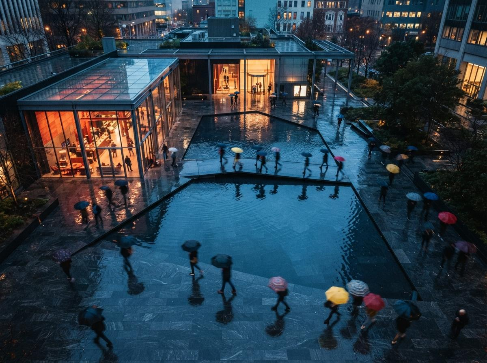

Twinmotion, Epic Games' real-time visualization tool, is often discussed alongside AI rendering tools as though it were one of them. On the public record, it is not yet. This guide sets out what Epic's own documentation says Twinmotion does, where AI currently enters the workflow, where the hand-off points between tools sit, and which risks the vendors themselves acknowledge. It is a reading of public sources, not a report of a test: ArchiGen has not run this pipeline on a project, and nothing below should be read as a measured result.
The short version: the documented core of the workflow is Datasmith and Direct Link, which move a model from a BIM or CAD application into Twinmotion. The documented AI inside Twinmotion is narrow, NVIDIA DLSS for real-time image quality and performance. Epic has spoken publicly about AI stylisation tools, but the 2026 release notes listed below do not include them. Generative image work, where it happens, happens in a separate tool after export.
Step one: get the model in with Datasmith and Direct Link
Epic describes the Datasmith exporter plugins as the route for bringing models from “any major Building Information Modeling (BIM), Computer-Aided Design (CAD), or modeling design application” into Twinmotion. The documentation describes two ways to use them. The first is file export: the design application writes a .udatasmith file and a folder of material assets, which you import into Twinmotion and can re-import later. The second is Direct Link, a live connection between the two applications, with an Auto Sync option that Epic says can synchronize scenes “in real-time, or on demand.” Epic also documents that several direct links can feed one Twinmotion project, which matters when a scheme is split across applications.
Epic's supported-applications page lists the following for the tools most architects use:
| Design application | Versions listed | Delivery | Documented workflow |
|---|---|---|---|
| Revit | 2018–2023 | Plugin | Direct Link + Auto Sync; file import |
| Revit | 2024 and later | Built in | Direct Link + Auto Sync; file import |
| Archicad | 23–29 | Plugin | Direct Link + Auto Sync; file import |
| SketchUp Pro | 2020–2026 | Plugin | Direct Link + Auto Sync; file import |
| SketchUp Pro | 2019 | Plugin | File import only |
| Rhino / Grasshopper | 6–8 | Plugin | Direct Link + Auto Sync; file import |
The same page also lists 3ds Max, Vectorworks, Allplan, SOLIDWORKS and others. Check it against your own versions before planning around it, because the list changes between releases.
What the sync carries, according to Epic
Epic's Direct Link walkthrough is short. You install the exporter plugin, open the scene in the design application, choose the Direct Link tab in Twinmotion's import dialog, select the source, then click Synchronize with Direct Link in the design application. With Auto Sync on, Epic says, “each time you make a change to the scene in your design application, the changes are automatically copied to Twinmotion in real time.” The page says the workflow keeps “group hierarchy and organization, components, objects, and materials,” and that textures are written to a DirectLinkTextures folder. It also documents commands to reset materials or transforms on a selection without a full re-import.
What the page does not spell out is just as useful to know. It does not say whether BIM metadata comes across, and it does not describe what happens to a material you have replaced in Twinmotion when the next sync arrives. If either matters to your project, confirm it on a small file before relying on it. Twinmotion 2025.1's release notes add one practical point: the legacy Direct Link add-on plugins were removed, so the current Datasmith exporter is the one to install. Twinmotion 2025.2 added a DCC Camera Sync control that, according to Epic, aligns viewport cameras between applications over Direct Link and Datasmith imports.

Step two: build the scene and render inside Twinmotion
Once the model is in, the context, lighting, vegetation and people live in Twinmotion rather than in the BIM file. Recent release notes describe what Epic has added to that stage:
- Twinmotion 2025.1 declared the path tracer production-ready, with volumetric cloud support and “spatial denoiser improvements.”
- Twinmotion 2025.2 added Nanite, Unreal Engine 5's virtualized geometry system, plus redesigned non-photorealistic post-process effects (“hatching, Kuwahara filtering, and pen-style outlines”) and import of
.cubeLUTs. - Twinmotion 2026.1 added photo-match tools for placing a 3D model into a background image, lighting channels, “Autosoft edges” in Path Tracer and Lumen modes, new camera and lens effects, and a move to the Interchange import pipeline for FBX and OBJ.
- Twinmotion 2026.2 Preview lists reworked night skies, MegaLights as a shadow mode, Cryptomatte export, and an extension of Interchange to GLTF, GLB and SKP, with import support for 3DS, C4D, DAE, DXF and STL discontinued.
The non-photorealistic filters in 2025.2 are worth noticing in an AI article. They are post-process effects, not generative AI. For a sketch or hatched look that has to stay faithful to the model, they are a documented option inside Twinmotion, before you reach for an external AI tool.
Where AI actually sits in Twinmotion today
Documented: NVIDIA DLSS
The one AI technology that Epic's Twinmotion documentation names as shipping is NVIDIA DLSS. The 2025.1.1 release notes added DLSS 4 support for “NVIDIA series 20 to 50 graphics cards,” describing it as “based on neural rendering technologies” that “enhance visuals, improve stability, and boost real-time scene performance.” The Preferences documentation calls DLSS “an AI rendering technology developed by NVIDIA,” offers it alongside Unreal Engine's own Temporal Super Resolution, and lists frame-generation settings of Off, Auto, 2X, 3X and 4X, with support depending on GPU generation. This is an upscaling and real-time performance feature. Epic does not describe it as restyling an image or adding content the way generative image tools do.
Announced but not documented as shipped: AI stylisation
In a December 2025 interview with AEC Magazine, Colin Smith of Epic said: “We are going to be incorporating AI functionality in the 2026 time frame. We have a number of AI tools that are coming, mostly around stylisation.” He described using AI to take a finished render and make it more photorealistic, and experiments with changing backgrounds. These are vendor statements about future plans. The Twinmotion 2026.1 release notes and the 2026.2 Preview release notes list no AI stylisation feature. A 2026 user post on Epic's developer forum asks about “AI Image Styles” and “AI Enhance” as roadmap items and, at the time of writing, had no reply from Epic staff. Until Epic publishes release notes for these features, plan as though they are not available.
If you have read elsewhere that Twinmotion ships AI material variation, AI asset search or an AI path-tracer denoiser, none of these appears in the Epic release notes cited here. The path-tracer denoiser is documented, but Epic does not describe it as AI.
Step three: the hand-off to an external AI tool
Because Twinmotion does not document generative image features, a Twinmotion-plus-AI workflow means exporting a frame and processing it elsewhere. Epic's export documentation describes the formats available at that hand-off:
- PNG, 8 bits per channel RGBA, lossless.
- JPG, 8-bit RGB, lossy.
- EXR, “16-bits per channel floating-point RGBA,” which Epic calls “ideal for post-production editing.”
Image resolutions run from 1920 × 1080 to 15360 × 8640 as presets, with custom sizes up to 61440 × 61440 when tiled rendering is enabled. Render layers can be exported as separate layers or as black-and-white masks. Twinmotion's Cryptomatte documentation describes mattes by Object ID, Material ID, Container ID, Mesh section ID and Render layer ID, written as channels in the EXR, for “selective image adjustments such as color correction and grading.”
Those mattes and masks are the most useful thing to carry across the hand-off. They let you confine an AI pass to the sky, planting or entourage and keep the building itself untouched, or composite the original building back over an AI-processed frame afterwards. The export page cited here does not list a depth or normal pass, so do not assume one is available.
What the AI tools document about control
Two documented examples show the controls you are working with on the other side of the hand-off.
Magnific, a commercial upscaler, documents in its API reference a creativity parameter to “increase or decrease AI's creativity,” a resemblance parameter to “adjust the level of resemblance to the original image,” and an HDR parameter for “definition and detail,” each ranging from -10 to 10 with a default of 0. It also lists a style option optimized for 3D renders. These are vendor descriptions, and the reference does not claim that any setting preserves geometry.
ControlNet, an open-source research project, describes itself as “a neural network structure to control diffusion models by adding extra conditions,” with conditions including Canny edges, M-LSD lines, depth maps, normal maps and semantic segmentation. In a local pipeline, an edge or line map taken from the Twinmotion frame is one way to tie a diffusion pass to the drawn geometry. For more on that approach, see our guide to enhancing a render without hallucination.
The risks, stated plainly
Geometry drift in AI passes
The Twinmotion frame is tied to the model through Direct Link. An AI-processed frame is not. Magnific's own parameter names, creativity and resemblance, describe a trade-off between invention and fidelity, and Colin Smith made the same point about Epic's planned tools: “AI can do a lot of things to enhance your scene, but if you're not careful, it can do [negative] things to your hero model.” In practice:
- Treat the Twinmotion export as the record image, and any AI-processed version as a derivative that has to be checked against it.
- Use Cryptomatte or render-layer masks to keep AI changes away from the building, or composite the original building back in.
- Compare openings, mullions, floor lines and rooflines between the two images before anything goes to a client. Our geometry hallucination QA checklist covers what to look for.
- Remember that a change made in the AI image does not flow back to the model. Epic documents Direct Link as carrying changes from the design application into Twinmotion, and describes no return path from an exported image.
Licensing
Twinmotion's pricing is often misreported. As reported by CG Channel when the change took effect in April 2024, and again for the 2026.1 release, Twinmotion is free for users with annual revenue under $1 million, including commercial use, but the free edition excludes Twinmotion Cloud. Larger studios pay $445 per seat per year. Epic's own licence page blocked our automated access, so confirm the current terms there before relying on them. Neither report describes a separate waiver for architects. Eligibility depends on revenue, not on discipline.
The AI tool at the far end of the pipeline has its own terms, covering who owns outputs, whether uploads are used for training, and what commercial use is allowed. Those terms vary by vendor and plan, and they apply separately from Twinmotion's. Our guide to AI render ownership and commercial use covers what to check. If the frame shows client work, the upload itself is a confidentiality decision, discussed in our cloud AI render upload gate.
A documented workflow, in order
- Check versions. Confirm your design application and version against Epic's supported-applications list, and install the current Datasmith exporter, not the retired legacy add-ons.
- Link the model. Use Direct Link with Auto Sync for live iteration, or
.udatasmithexport when you want a fixed snapshot. Confirm on a small file how materials you replace in Twinmotion behave on re-sync. - Build the scene in Twinmotion. Set up context, lighting and cameras there. Use DCC Camera Sync if you want views to match the design application.
- Render the record image. Use the path tracer or Lumen for stills, and the non-photorealistic filters if you need a stylized look that stays tied to the model.
- Export for the hand-off. Use EXR with Cryptomattes, or PNG with render-layer masks, so the building can be protected or restored after the AI pass.
- Run the AI pass outside Twinmotion, with fidelity controls set conservatively and masks applied. Read the tool's terms before uploading client work.
- Check the result against the record image, and keep both. If the AI version changed the design, the image is wrong, not the model.
For how Twinmotion's real-time output compares with a pure AI render route by deliverable, see Twinmotion 2026.1 versus AI rendering. For where it sits in a wider Revit or Archicad stack, see the BIM-first AI stack.
Sources
- Datasmith Exporter Plugins Overview, Epic Games (Twinmotion documentation). Accessed 30 September 2026.
- Datasmith Direct Link Workflow in Twinmotion, Epic Games (Twinmotion documentation). Accessed 30 September 2026.
- Supported Design Applications for Datasmith, Epic Games (Twinmotion documentation). Accessed 30 September 2026.
- Twinmotion 2025.1 Release Notes, Epic Games. Accessed 30 September 2026.
- Twinmotion 2025.1.1 Release Notes, Epic Games. Accessed 30 September 2026.
- Twinmotion 2025.2 Release Notes, Epic Games. Accessed 30 September 2026.
- Twinmotion 2026.1 Release Notes, Epic Games. Accessed 30 September 2026.
- Twinmotion 2026.2 Preview Release Notes, Epic Games. Accessed 30 September 2026.
- Twinmotion Preferences, Epic Games (Twinmotion documentation). Accessed 30 September 2026.
- Export Settings for Images and Panoramas in Twinmotion, Epic Games (Twinmotion documentation). Accessed 30 September 2026.
- Cryptomattes in Twinmotion, Epic Games (Twinmotion documentation). Accessed 30 September 2026.
- Twinmotion: a new chapter, AEC Magazine (Greg Corke, 2 December 2025). Accessed 30 September 2026.
- AI Image Styles & AI Enhance (forum thread), Epic Developer Community Forums (user post). Accessed 30 September 2026.
- Twinmotion is now free to indie artists and studios, CG Channel (24 April 2024). Accessed 30 September 2026.
- Epic Games releases Twinmotion 2026.1, CG Channel (15 April 2026). Accessed 30 September 2026.
- Upscaler Creative - Upscale image (API reference), Magnific. Accessed 30 September 2026.
- ControlNet (GitHub repository), lllyasviel / ControlNet project. Accessed 30 September 2026.
No affiliate relationships.
Rewritten 30 September 2026. An earlier version of this article described a project pipeline test that ArchiGen did not carry out. This version is based on the public sources listed above.